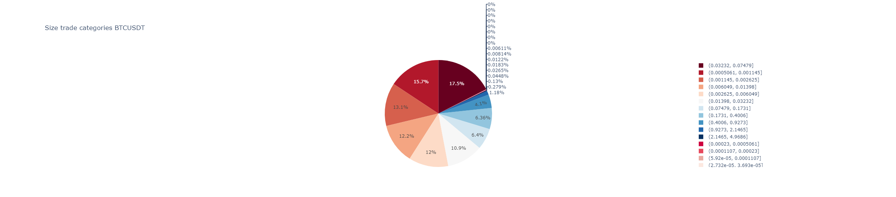

BinPan Module
Can be imported this way:
from binpan import binpan
This is the main classes file.
Symbol Class
This class can manage klines, trades and many more data.
Also include technical indicators, make plots, and get some exchange data.
There is a tutorial in a Jupyter Notebook file in https://github.com/nand0san/binpan_studio
- class binpan.binpan.Symbol(symbol: Optional[str] = None, tick_interval: Optional[str] = None, start_time: Optional[int] = None, end_time: Optional[int] = None, limit: int = 1000, time_zone: str = 'UTC', time_index: bool = True, closed: bool = True, from_redis: Optional[bool] = None, from_redis_trades: Optional[bool] = None, display_columns=25, display_rows=10, display_min_rows=25, display_width=320, from_csv: bool = False)
Creates an object from binance klines and/or trade data. It contains the raw api response and a dataframe that can be modified.
Any symbol can be used as argument and any time interval like: ‘1m’, ‘3m’, ‘5m’, ‘15m’, ‘30m’, ‘1h’, ‘2h’, ‘4h’, ‘6h’, ‘8h’, ‘12h’, ‘1d’, ‘3d’, ‘1w’, ‘1M’
Object has several plot methods.
- Parameters
symbol (str) – It can be any symbol in the binance exchange, like BTCUSDT, ethbusd or any other. Capital letters doesn’t matter.
tick_interval (str) – Any candle’s interval available in binance. Capital letters doesn’t matter.
start_time (int or str) –
It can be an integer in milliseconds from epoch (1970-01-01 00:00:00 UTC) or any string in the formats:
%Y-%m-%d %H:%M:%S.%f: 2022-05-11 06:45:42.124567
%Y-%m-%d %H:%M:%S: 2022-05-11 06:45:42
If start time is passed, it gets the next open according to the tick interval selected except an exact open time passed.
end_time (int or str) –
It can be an integer in milliseconds from epoch (1970-01-01 00:00:00 UTC) or any string in the formats:
%Y-%m-%d %H:%M:%S.%f: 2022-05-11 06:45:42.124
%Y-%m-%d %H:%M:%S: 2022-05-11 06:45:42
If end time is passed, it gets candles till the previous close according to the selected tick interval.
Example with daily time saving inside the interval:
import binpan btcusdt = binpan.Symbol(symbol='btcusdt', tick_interval='15m', time_zone='Europe/Madrid', start_time='2021-10-31 01:00:00', end_time='2021-10-31 03:00:00') btcusdt.df Open High Low Close Volume BTCUSDT 15m Europe/Madrid 2021-10-31 01:00:00+02:00 61540.32 61780.44 61488.35 61737.39 316.93504 2021-10-31 01:15:00+02:00 61737.39 61748.13 61486.86 61637.99 485.50681 2021-10-31 01:30:00+02:00 61637.99 61777.71 61479.76 61743.32 441.29718 2021-10-31 01:45:00+02:00 61743.31 61900.00 61640.55 61859.19 505.87893 2021-10-31 02:00:00+02:00 61859.19 62328.38 61859.18 62328.13 1046.30598 2021-10-31 02:15:00+02:00 62328.13 62399.00 62142.74 62246.30 679.96187 2021-10-31 02:30:00+02:00 62246.30 62371.72 62171.01 62301.39 355.25273 2021-10-31 02:45:00+02:00 62301.39 62400.15 62220.27 62375.29 568.02797 2021-10-31 02:00:00+01:00 62375.28 62405.30 62260.01 62367.79 421.52566 2021-10-31 02:15:00+01:00 62367.79 62394.06 62219.50 62270.00 537.53843 2021-10-31 02:30:00+01:00 62270.00 62371.49 62156.83 62169.01 452.62728 2021-10-31 02:45:00+01:00 62169.01 62227.00 62114.18 62169.00 283.45948
limit (int) –
The limit is the quantity of candles requested. Can combine with start_time or end_time:
If no start or end timestamp passed, gets current timestamp and limit of candles backwards.
If just start time or endtime passed, then applies the limit to find the endtime or start time respectively.
if endtime and start time passed, it gets all the ticks between, even if more than 1000 by calling several times to API until completed. Limit ignored.
time_zone (str) –
The index of the pandas dataframe in the object can be converted to any timezone, i.e. “Europe/Madrid”
The binance API use milliseconds from epoch (1970-01-01 00:00:00 UTC), that means that converting to a timezoned date with daily time saving changes, the result would show the change in the timestamp.
Candles are ordered with the timestamp regardless of the index name, even if the index shows the hourly change because daily time saving changes.
time_index (bool) – Shows human-readable index in the dataframe. Set to False shows numeric index. default is True.
closed (bool) – The last candle is a closed one in the moment of the creation, instead of a running candle not closed yet.
from_redis (bool or StrictRedis) – If enabled, BinPan will look for a secret file with the redis ip, port and any other parameter in a map. But can be passed a StrictRedis client object previously configured. secret.py file map example: redis_conf = {‘host’:’192.168.1.5’,’port’: 6379,’db’: 0,’decode_responses’: True}
display_columns (int) – Number of columns in the dataframe display. Convenient to adjust in jupyter notebooks.
display_rows (int) – Number of rows in the dataframe display. Convenient to adjust in jupyter notebooks.
display_width (int) – Display width in the dataframe display. Convenient to adjust in jupyter notebooks.
from_csv (bool or str) – If True, gets data from a csv file by selecting interactively from csv files found. Also a string with filename can be used.
Examples:
binpan_object = binpan.Symbol(symbol='ethbusd', tick_interval='5m', limit=100, display_rows=10) binpan_object.df Open High Low Close Volume Quote volume Trades Taker buy base volume Taker buy quote volume ETHBUSD 5m UTC 2022-06-22 08:55:00+00:00 1077.29 1081.11 1076.34 1080.18 810.1562 8.737861e+05 1401.0 410.0252 4.422960e+05 2022-06-22 09:00:00+00:00 1080.28 1087.31 1079.90 1085.03 2446.4199 2.653134e+06 3391.0 1253.6380 1.359514e+06 2022-06-22 09:05:00+00:00 1085.14 1085.98 1080.70 1080.99 1502.4415 1.628110e+06 1664.0 509.9937 5.525626e+05 2022-06-22 09:10:00+00:00 1080.79 1084.53 1080.26 1083.30 906.5092 9.814984e+05 1438.0 514.6718 5.573028e+05 2022-06-22 09:15:00+00:00 1083.42 1085.35 1081.41 1081.53 1191.9566 1.291633e+06 1549.0 736.5743 7.983178e+05 ... ... ... ... ... ... ... ... ... ... 2022-06-22 16:50:00+00:00 1067.61 1070.00 1066.21 1069.32 1951.1378 2.084288e+06 1535.0 1396.4956 1.491744e+06 2022-06-22 16:55:00+00:00 1069.47 1078.61 1069.47 1077.78 2363.1639 2.539150e+06 3578.0 1239.7735 1.332085e+06 2022-06-22 17:00:00+00:00 1077.96 1079.32 1071.25 1073.00 1452.3712 1.560748e+06 2534.0 651.9175 7.006751e+05 2022-06-22 17:05:00+00:00 1072.76 1075.04 1071.00 1073.47 728.9761 7.820787e+05 1383.0 303.3896 3.254396e+05 2022-06-22 17:10:00+00:00 1073.42 1076.30 1073.24 1075.77 228.4269 2.456515e+05 426.0 127.7424 1.373634e+05 100 rows × 9 columnsCreated objects contain different instantiated variables like mysymbol.df that shows the candles dataframe:
mysymbol.df: shows candles dataframe
mysymbol.trades: a pandas dataframe (if requested) with aggregated trades between start and end of the dataframe timestamps.
mysymbol.version: Version of BinPan.
mysymbol.symbol: symbol instantiated.
mysymbol.fees: personal fees applied for the symbol.
mysymbol.tick_interval: tick_interval selected.
mysymbol.start_time: start time instantiated.
mysymbol.end_time: end time instantiated.
mysymbol.limit: limit of candles in the instance, but if instantiated with start and end times, can be overridden.
mysymbol.time_zone: timezone of the dates in the index of the dataframe.
mysymbol.time_index: time index if true or integer index if false.
mysymbol.closed: asked for dropping not closed candles.
mysymbol.start_ms_time: timestamp obtained from api in the first candle.
mysymbol.end_ms_time: timestamp obtained from api in the last candle.
mysymbol.display_columns: display columns in shell
mysymbol.display_rows: display rows in shell
mysymbol.display_min_rows: display max_rows in shell
mysymbol.display_width: display width in shell
mysymbol.orderbook: a pandas dataframe (if requested) with last orderbook requested.
mysymbol.row_control: dictionary with data about plotting control. Represents each dataframe colum position in the plots.
mysymbol.color_control: dictionary with data about plotting control. Represents each dataframe colum color in the plots.
mysymbol.color_fill_control: dictionary with data about plotting control. Represents each dataframe colum with color filled to zero line in the plots.
mysymbol.indicators_filled_mode: dictionary with filling mode for each line. Values can be None, tonexty, tozeroy.
mysymbol.axis_group: dictionary with axis group each line. Values can be None or y, y2, etc.
mysymbol.row_counter: counter for the indicator rows in a plot.
mysymbol.len: length of the dataframe
mysymbol.raw: api klines raw response when instantiated.
mysymbol.info_dic: exchangeInfo data when instantiated. It includes, filters, fees, and many other data for all symbols in the exchange.
mysymbol.order_filters: filters applied for the symbol when ordering.
mysymbol.order_types: list of type of orders available for that symbol.
mysymbol.permissions: list of possible trading ways, like SPOT or MARGIN.
mysymbol.precision: decimals quantity applied for base and quote assets.
Methods:
df()Returns candles dataframe.
trades()Returns trades dataframe.
symbol()Returns symbol.
version()Returns version on BinPan.
fees()Returns fees for symbol.
Returns tick_interval for symbol.
set_strategy_groups(column, group[, ...])Returns strategy_groups for BinPan DataFrame.
Returns column names starting with "Strategy".
Returns start_time on instance.
end_time()Returns end_time on instance.
limit()Returns limit on instance.
Returns time_zone for symbol.
Returns if time_index.
closed()Returns if not closed candles were dropped when instantiated.
Returns exchangeInfo data when instantiated.
save_csv([timestamped])Saves current csv to a csv file.
set_display_columns([display_columns])Change the number of maximum columns shown in the display of the dataframe.
set_display_min_rows([display_rows])Change the number of minimum rows shown in the display of the dataframe.
set_display_max_rows([display_max_rows])Change the number of maximum rows shown in the display of the dataframe.
set_display_width([display_width])Change the shown width shown in the display of the dataframe.
set_display_decimals(display_decimals)Change the decimals shown in the dataframe.
basic([exceptions, actions_col, inplace])Shows just a basic selection of columns data in the dataframe.
drop([columns_to_drop, inplace])It drops some columns from the dataframe.
insert_indicator(source_data[, ...])Adds indicator to dataframe.
hk([inplace])It computes Heikin Ashi candles.
Get the first Open timestamp and the last Close timestamp.
Get the first Open timestamp and the last Close timestamp, and converts to timezoned dates.
get_trades([hours, minutes, startTime, ...])Calls the API and creates another dataframe included in the object with the aggregated trades from API for the period of the created object.
is_new(source_data[, suffix])Verify if indicator columns are previously created to avoid allocating new rows and colors etc.
set_plot_row([indicator_column, row_position])Internal control formatting plots.
set_plot_color([indicator_column, color])Internal control formatting plots.
set_plot_color_fill([indicator_column, ...])Internal control formatting plots.
set_plot_filled_mode([indicator_column, ...])Internal control formatting plots.
set_plot_axis_group([indicator_column, ...])Internal control formatting plots.
Modify the control for splitted series in plots with colored area in two colors by relative position.
plot([width, height, ...])Plots a candles figure for the object.
plot_trades_size([max_size, height, ...])It plots a time series graph plotting trades sized by quantity and color if taker or maker buyer.
plot_trades_pie([categories, logarithmic, title])Plots a pie chart.
plot_aggression_sizes([bins, hist_funct, ...])Binance fees can be cheaper for maker orders, many times when big traders, like whales, are operating .
plot_market_profile([bins, hours, minutes, ...])Plots volume histogram by prices segregated aggressive buyers from sellers.
plot_trades_scatter([x, y, dot_symbol, ...])A scatter plot showing each price level volume or trades.
plot_orderbook([accumulated, title, height, ...])Plots orderbook depth.
plot_orderbook_density([x_col, color, bins, ...])Plot a distribution plot for a dataframe column.
Get exchange info about the symbol for order filters.
Get exchange info about the symbol for order types.
Get exchange info about the symbol for trading permissions.
Get exchange info about the symbol for assets precision.
Return the symbol status, TRADING, BREAK, etc.
backtesting(actions_col[, target_column, ...])Simulates buys and sells using labels in a tagged column with actions.
roi([column])It returns win or loos percent for a evaluation column.
profit_hour([column])It returns win or loos quantity per hour.
get_fees([symbol])Shows applied fees for the symbol of the object.
get_orderbook([limit])Gets orderbook.
ma([ma_name, column_source, inplace, ...])Generic moving average method.
sma([window, column, inplace, suffix, color])Generate technical indicator Simple Moving Average.
ema([window, column, inplace, suffix, color])Generate technical indicator Exponential Moving Average.
supertrend([length, multiplier, inplace, ...])Generate technical indicator Supertrend.
macd([fast, slow, smooth, inplace, suffix, ...])Generate technical indicator Moving Average, Convergence/Divergence (MACD).
rsi([length, inplace, suffix, color])Relative Strength Index (RSI).
stoch_rsi([rsi_length, k_smooth, d_smooth, ...])Stochastic Relative Strength Index (RSI) with a fast and slow exponential moving averages.
on_balance_volume([inplace, suffix, color])On balance indicator.
accumulation_distribution([inplace, suffix, ...])Accumulation/Distribution indicator.
vwap([anchor, inplace, suffix, color])Volume Weighted Average Price.
atr([length, inplace, suffix, color])Average True Range.
cci([length, scaling, inplace, suffix, color])Compute the Commodity Channel Index (CCI) for NIFTY based on the 14-day moving average.
eom([length, divisor, drift, inplace, ...])Ease of Movement (EMV) can be used to confirm a bullish or a bearish trend.
roc([length, escalar, inplace, suffix, color])The Rate of Change (ROC) is a technical indicator that measures the percentage change between the most recent price and the price "n" day’s ago.
bbands([length, std, ddof, inplace, suffix, ...])These bands consist of an upper Bollinger band and a lower Bollinger band and are placed two standard deviations above and below a moving average.
stoch([k_length, stoch_d, k_smooth, ...])Stochastic Oscillator with a fast and slow exponential moving averages.
ichimoku([tenkan, kijun, chikou_span, ...])The Ichimoku Cloud is a collection of technical indicators that show support and resistance levels, as well as momentum and trend direction.
fractal_w([period, inplace, suffix, colors])The fractal indicator is based on a simple price pattern that is frequently seen in financial markets.
pandas_ta_indicator(name, **kwargs)Calls any indicator in pandas_ta library with function name as first argument and any kwargs the function will use.
tag(column, reference[, relation, ...])It tags values of a column/serie compared to other serie or value by methods gt,ge,eq,le,lt as condition.
cross(slow[, fast, cross_over_tag, ...])It tags crossing values from a column/serie (fast) over a serie or value (slow).
shift(column[, window, strategy_group, ...])It shifts a candle ahead by the window argument value (or backwards if negative)
merge_columns(main_column, other_column[, ...])Predominant serie will be filled nans with values, if existing, from the other serie.
clean_in_out(column[, in_tag, out_tag, ...])Predominant serie will be filled nans with values, if existing, from the other serie.
strategy_from_tags_crosses([columns, ...])Checks where all tags and cross columns get value "1" at the same time.
ffill(column[, window, inplace, replace, ...])It forward fills a value through nans through a window ahead.
- df()
Returns candles dataframe.
- Return pd.DataFrame
- trades()
Returns trades dataframe.
- Return pd.DataFrame
- symbol()
Returns symbol.
- Return str
- version()
Returns version on BinPan.
- Return str
- fees()
Returns fees for symbol. API keys required.
- Return dict
- tick_interval()
Returns tick_interval for symbol.
- Return str
- set_strategy_groups(column: str, group: str, strategy_groups: Optional[dict] = None)
Returns strategy_groups for BinPan DataFrame.
- Parameters
column (str) – A column to tag with a strategy group.
group (str) – Name of the group.
strategy_groups (str) – The existing strategy groups.
- Return dict
Updated strategy groups of columns.
- get_strategy_columns() list
Returns column names starting with “Strategy”. :return dict: Updated strategy groups of columns.
- start_time()
Returns start_time on instance.
- Return int
- end_time()
Returns end_time on instance.
- Return int
- limit()
Returns limit on instance.
- Return int
- time_zone()
Returns time_zone for symbol.
- Return str
- time_index()
Returns if time_index.
- Return bool
- closed()
Returns if not closed candles were dropped when instantiated.
- Return bool
- update_info_dic()
Returns exchangeInfo data when instantiated. It includes, filters, fees, and many other data for all symbols in the exchange.
- Return dict
- save_csv(timestamped: bool = True)
Saves current csv to a csv file.
- Parameters
timestamped (bool) – Adds start and end timestamps to the name.
- Returns
- set_display_columns(display_columns=None)
Change the number of maximum columns shown in the display of the dataframe.
- Parameters
display_columns (int) – Integer
- set_display_min_rows(display_rows=None)
Change the number of minimum rows shown in the display of the dataframe.
- Parameters
display_rows (int) – Integer
- set_display_max_rows(display_max_rows=None)
Change the number of maximum rows shown in the display of the dataframe.
- Parameters
display_max_rows (int) – Integer
- set_display_width(display_width: Optional[int] = None)
Change the shown width shown in the display of the dataframe.
- Parameters
display_width (int) – Integer
- static set_display_decimals(display_decimals: int)
Change the decimals shown in the dataframe. It changes all the columns decimals.
- Parameters
display_decimals (int) – Integer
- basic(exceptions: Optional[list] = None, actions_col='actions', inplace=False)
Shows just a basic selection of columns data in the dataframe. Any column can be excepted from been dropped.
- Parameters
exceptions (list) – Columns names to keep.
actions_col (str) – Under development. To keep tags for buy or sell actions.
inplace (bool) – Keep in the object just the basic columns, loosing any other one.
- Return pd.DataFrame
Pandas DataFrame
- drop(columns_to_drop=[], inplace=False) DataFrame
It drops some columns from the dataframe. If columns list not passed, then defaults to the initial columns.
Can be used when messing with indicators to clean the object.
- Param
list columns: A list with the columns names to drop. If not passed, it defaults to the initial columns that remain from when instanced. Defaults to any column but initial ones.
- Param
bool inplace: When true, it drops columns in the object. False just returns a copy without that columns and dataframe in the object remains.
- Return pd.DataFrame
Pandas DataFrame with columns dropped.
- insert_indicator(source_data: Series, strategy_group: Optional[str] = None, row: Optional[str] = None, rows: Optional[list] = None, color: str = 'blue', colors: Optional[list] = None, color_fills: Optional[list] = None, name: Optional[str] = None, names: Optional[list] = None, suffix: str = '') DataFrame
Adds indicator to dataframe. It always do inplace.
- Parameters
source_data (pd.Series or pd.DataFrame or np.ndarray or list) – Source data from pandas_ta or any other. Expected named series or list of names, or at least a suffix. If nothing passed, name will be autogenerated.
strategy_group (int) – Optionally can be tagged into a strategy group when inserting data.
row (int) – When a single serie inserted, a plotting row for a single inserted object. 1 overlaps candles, other, gets own row.
rows (list) – mandatory. Rows position for autoplot each serie. 1 is overlap, ANY OTHER INTEGER will calculate row position. Passing list of source data will put different row for each indicator added, ignoring same number in the list. Finally you can change assigned row with
my_symbol.set_plot_row('New_column', 2)color (str) – When a single serie inserted, a plotting color.
colors (list) – Colors list for each serie indicator. Default is random colors.
color_fills (list) – Colors to fill indicator til y-axis or False to avoid. Example for transparent green
'rgba(26,150,65,0.5)'. Default is all False.name (str) – When a single serie inserted, a name for a single inserted object.
names (list) – A list for the columns when inserted.
suffix (str) – A suffix for the new column name/s. If numpy array or nameless pandas series, suffix is the whole name.
- Return pd.DataFrame or None
Instance candles dataframe.
- hk(inplace=False)
It computes Heikin Ashi candles. Any existing indicator column will not be recomputed. It is recommended to drop any indicator before converting candles to Heikin Ashi.
- Parameters
inplace (bool) – Change object dataframe permanently whe True is selected. False shows a copy dataframe.
- Return pd.DataFrame
Pandas DataFrame
- get_timestamps() Tuple[int, int]
Get the first Open timestamp and the last Close timestamp.
- Return tuple(int, int)
Start Open timestamp and end close timestamp
- get_dates() Tuple[str, str]
Get the first Open timestamp and the last Close timestamp, and converts to timezoned dates.
- Return tuple(int, int)
Start Open date and end close date
- get_trades(hours: Optional[int] = None, minutes: Optional[int] = None, startTime: Optional[int] = None, endTime: Optional[int] = None, time_zone: Optional[str] = None)
Calls the API and creates another dataframe included in the object with the aggregated trades from API for the period of the created object.
Note
If the object covers a long time interval, this action can take a relative long time. The BinPan library take care of the API weight and can take a sleep to wait until API weight returns to a low value.
- Parameters
hours (int) – If passed, it use just last passed hours for the plot.
minutes (int) – If passed, it use just last passed minutes for the plot.
startTime (int or str) – If passed, it use just from the timestamp or date in format (%Y-%m-%d %H:%M:%S: 2022-05-11 06:45:42)) for the plot.
endTime (int or str) – If passed, it use just until the timestamp or date in format (%Y-%m-%d %H:%M:%S: 2022-05-11 06:45:42)) for the plot.
time_zone (str) – A time zone for time index conversion.
Example:
Aggregate tradeId Price Quantity First tradeId Last tradeId Date Timestamp Buyer was maker Best price match BTCBUSD Europe/Madrid 2022-11-20 14:11:36.763000+01:00 536009627 16524.58 0.21421 632568399 632568399 2022-11-20 14:11:36 1668949896763 True True 2022-11-20 14:11:36.787000+01:00 536009628 16525.04 0.02224 632568400 632568400 2022-11-20 14:11:36 1668949896787 True True 2022-11-20 14:11:36.794000+01:00 536009629 16525.04 0.01097 632568401 632568401 2022-11-20 14:11:36 1668949896794 True True 2022-11-20 14:11:36.849000+01:00 536009630 16525.27 0.05260 632568402 632568403 2022-11-20 14:11:36 1668949896849 False True 2022-11-20 14:11:36.849000+01:00 536009631 16525.28 0.00073 632568404 632568404 2022-11-20 14:11:36 1668949896849 False True ... ... ... ... ... ... ... ... ... ... 2022-11-20 15:10:57.928000+01:00 536083210 16556.75 0.01730 632653817 632653817 2022-11-20 15:10:57 1668953457928 True True 2022-11-20 15:10:57.928000+01:00 536083211 16556.74 0.00851 632653818 632653819 2022-11-20 15:10:57 1668953457928 True True 2022-11-20 15:10:57.950000+01:00 536083212 16558.48 0.00639 632653820 632653820 2022-11-20 15:10:57 1668953457950 False True 2022-11-20 15:10:57.990000+01:00 536083213 16558.48 0.01242 632653821 632653821 2022-11-20 15:10:57 1668953457990 True True 2022-11-20 15:10:58.020000+01:00 536083214 16558.49 0.00639 632653822 632653822 2022-11-20 15:10:58 1668953458020 False True [73588 rows x 9 columns]
- Returns
Pandas DataFrame
- is_new(source_data: Series, suffix: str = '') bool
Verify if indicator columns are previously created to avoid allocating new rows and colors etc.
- Parameters
source_data (pd.Series or pd.DataFrame) – Data from pandas_ta to review if is previously computed.
suffix (str) – If suffix passed, it takes it into account when searching for existence.
- Return bool
- set_plot_row(indicator_column: Optional[str] = None, row_position: Optional[int] = None)
Internal control formatting plots. Can be used to change plot subplot row of an indicator.
- Parameters
indicator_column (str) – column name
row_position – reassign row_position to column name
- Return dict
columns with its assigned row_position in subplots when plotting.
- set_plot_color(indicator_column: Optional[str] = None, color: Optional[int] = None) dict
Internal control formatting plots. Can be used to change plot color of an indicator.
- Parameters
indicator_column (str) – column name
color – reassign color to column name
- Return dict
columns with its assigned colors when plotting.
- set_plot_color_fill(indicator_column: Optional[str] = None, color_fill: Optional[str] = None) dict
Internal control formatting plots. Can be used to change plot color of an indicator.
- Parameters
indicator_column (str) – column name
color_fill – Color can be forced to fill to zero line. For transparent colors use rgba string code to define color. Example for transparent green ‘rgba(26,150,65,0.5)’ or transparent red ‘rgba(204,0,0,0.5)’
- Return dict
columns with its assigned colors when plotting.
- set_plot_filled_mode(indicator_column: Optional[str] = None, fill_mode: Optional[str] = None) dict
Internal control formatting plots. Can be used to change plot filling mode for pairs of indicators when.
- Parameters
indicator_column (str) – column name
fill_mode – Fill mode for indicator. Color can be forced to fill to zero line with “tozeroy” or between two indicators in same axis group with “tonexty”.
- Return dict
columns with its assigned fill mode.
- set_plot_axis_group(indicator_column: Optional[str] = None, my_axis_group: Optional[str] = None) dict
Internal control formatting plots. Can be used to change plot filling mode for pairs of indicators when.
- Parameters
indicator_column (str) – column name
my_axis_group – Fill mode for indicator. Color can be forced to fill to zero line with “tozeroy” or between two indicators in same axis group with “tonexty”.
- Return dict
columns with its assigned fill mode.
- set_plot_splitted_serie_couple(indicator_column_up: Optional[str] = None, indicator_column_down: Optional[str] = None, splitted_dfs: Optional[list] = None, color_up: str = 'rgba(35, 152, 33, 0.5)', color_down: str = 'rgba(245, 63, 39, 0.5)') dict
Modify the control for splitted series in plots with colored area in two colors by relative position.
If no params passed, then returns dict actual contents.
- Parameters
indicator_column_up (str) – An existing column from a BinPan Symbol’s class dataframe to plot as up serie (green color).
indicator_column_down (str) – An existing column from a BinPan Symbol’s class dataframe to plot as down serie (red clor).
splitted_dfs (tuple) – A list of pairs of a splitted dataframe by two columns.
color_up – An rgba formatted color: https://rgbacolorpicker.com/
color_down – An rgba formatted color: https://rgbacolorpicker.com/
- Return dict
A dictionary with auxiliar data about plot areas with two colours by relative position.
- plot(width: int = 1800, height: int = 1000, candles_ta_height_ratio: float = 0.75, volume: bool = True, title: Optional[str] = None, yaxis_title: str = 'Price', overlapped_indicators: list = [], priced_actions_col: str = 'Close', actions_col: Optional[str] = None, marker_labels: Optional[dict] = None, markers: Optional[list] = None, marker_colors: Optional[list] = None, background_color=None, zoom_start_idx=None, zoom_end_idx=None)
Plots a candles figure for the object.
Also plots any other technical indicator grabbed.

- Parameters
width (int) – Width of the plot.
height (int) – Height of the plot.
candles_ta_height_ratio (float) – Proportion between candles and the other indicators. Not considering overlap ones in the candles plot.
volume (bool) – Plots volume.
title (str) – A tittle for the plot.
yaxis_title (str) – A title for the y axis.
overlapped_indicators (list) – Can declare as overlap in the candles plot some column.
priced_actions_col (str) – Priced actions to plot annotations over the candles, like buy, sell, etc. Under developing.
actions_col (str) – A column containing actions like buy or sell. Under developing.
marker_labels (dict) – Names for the annotations instead of the price. For ‘buy’ tags and ‘sell’ tags. Default is {‘buy’: 1, ‘sell’: -1}
markers (list) – Plotly marker type. Usually, if referenced by number will be a not filled mark and using string name will be a color filled one. Check plotly info: https://plotly.com/python/marker-style/
marker_colors (list) – Colors of the annotations.
background_color (str) – Sets background color. Select a valid plotly color name.
zoom_start_idx (int) – It can zoom to an index interval.
zoom_end_idx (int) – It can zoom to an index interval.
- plot_trades_size(max_size: int = 60, height: int = 1000, logarithmic: bool = False, overlap_prices: bool = True, group_big_data: Optional[int] = None, title: Optional[str] = None)
It plots a time series graph plotting trades sized by quantity and color if taker or maker buyer.
Can be used with trades (requieres calling for trades before, or using candles and volume from the object to avoid waiting long time intervals grabbing the trades.)
It can be useful finding support and resistance zones.
- Parameters
max_size (int) – Max size for the markers. Default is 60. Useful to show whales operating.
height (int) – Default is 1000.
logarithmic (bool) – If logarithmic, then “y” axis scale is shown in logarithmic scale.
group_big_data (int) – If true, groups data in height bins, this can get faster plotting for big quantity of trades.
overlap_prices (bool) – If True, plots overlap line with High and Low prices.
title – Graph title
- plot_trades_pie(categories: int = 25, logarithmic=True, title: Optional[str] = None)
Plots a pie chart. Useful profiling size of trades. Size can be distributed in a logarithmic scale.
- Parameters
categories – How many groups of sizes.
logarithmic – Logarithmic scale to show more small sizes.
title – A title for the plot.
- plot_aggression_sizes(bins=50, hist_funct='sum', height=900, from_trades=False, title: Optional[str] = None, total_volume_column: Optional[str] = None, partial_vol_column: Optional[str] = None, **kwargs_update_layout)
Binance fees can be cheaper for maker orders, many times when big traders, like whales, are operating . Showing what are doing makers.
It shows which kind of volume or trades came from, aggressive_sellers or aggressive_byers.
Can be useful finding support and resistance zones.
- Parameters
bins – How many bars.
hist_funct – The way graph data is showed. It can be ‘mean’, ‘sum’, ‘percent’, ‘probability’, ‘density’, or ‘probability density’
height – Height of the graph.
from_trades – Requieres grabbing trades before.
title – A title.
total_volume_column – The column with the total volume. It defaults automatically.
partial_vol_column – The column with the partial volume. It defaults automatically. API shows maker or taker separated volumes.
kwargs_update_layout – Optional
- plot_market_profile(bins: int = 100, hours: Optional[int] = None, minutes: Optional[int] = None, startTime: Optional[int] = None, endTime: Optional[int] = None, height=900, from_trades=False, title: str = 'Market Profile', time_zone: Optional[str] = None, **kwargs_update_layout)
Plots volume histogram by prices segregated aggressive buyers from sellers.
- Parameters
bins (int) – How many bars.
hours (int) – If passed, it use just last passed hours for the plot.
minutes (int) – If passed, it use just last passed minutes for the plot.
startTime (int or str) – If passed, it use just from the timestamp or date in format (%Y-%m-%d %H:%M:%S: 2022-05-11 06:45:42)) for the plot.
endTime (int or str) – If passed, it use just until the timestamp or date in format (%Y-%m-%d %H:%M:%S: 2022-05-11 06:45:42)) for the plot.
height – Height of the graph.
from_trades – Requieres grabbing trades before.
title – A title.
time_zone (str) – A time zone for time index conversion.
kwargs_update_layout – Optional
- plot_trades_scatter(x: str = ['Price', 'Close'], y: str = ['Quantity', 'Volume'], dot_symbol='Buyer was maker', color: str = ['Buyer was maker', 'Taker buy base volume'], marginal=True, from_trades=True, height=1000, color_referenced_to_y=True, **kwargs)
A scatter plot showing each price level volume or trades.
It can be useful finding support and resistance zones.
- Parameters
dot_symbol – Column with discrete values to assign different symbols for the plot marks.
x – Name of the column with prices. From trades or candles.
y – Name of the column with sizes. From trades or candles.
color – Column with values to use in color scale.
marginal – Show or not lateral plots.
from_trades – Uses trades instead of candles. Useful to avoid grabbing very long time intervals. Result should be similar.
height – Height of the plot.
color_referenced_to_y – Scales color in y axis.
kwargs – Optional plotly args.
- plot_orderbook(accumulated=True, title='Depth orderbook plot', height=800, plot_y='Quantity', **kwargs)
Plots orderbook depth.
- plot_orderbook_density(x_col='Price', color='Side', bins=300, histnorm: str = 'density', height: int = 800, title: Optional[str] = None, **update_layout_kwargs)
Plot a distribution plot for a dataframe column. Plots line for kernel distribution.
- Parameters
x_col (str) – Column name for x-axis data.
color (str) – Column name with tags or any values for using as color scale.
bins (int) – Columns in histogram.
histnorm (str) – One of ‘percent’, ‘probability’, ‘density’, or ‘probability density’ from plotly express documentation. https://plotly.github.io/plotly.py-docs/generated/plotly.express.histogram.html
height (int) – Plot sizing.
title (str) – A title string
- get_order_filters() dict
Get exchange info about the symbol for order filters. :return dict:
- get_order_types() dict
Get exchange info about the symbol for order types. :return dict:
- get_permissions() dict
Get exchange info about the symbol for trading permissions. :return dict:
- get_precision() dict
Get exchange info about the symbol for assets precision. :return dict:
- get_status() str
Return the symbol status, TRADING, BREAK, etc.
- backtesting(actions_col: str, target_column: Optional[str] = None, stop_loss_column: Optional[str] = None, entry_filter_column: Optional[str] = None, fixed_target: bool = True, fixed_stop_loss: bool = True, base: float = 0, quote: float = 1000, priced_actions_col: str = 'Open', label_in=1, label_out=- 1, fee: float = 0.001, evaluating_quote: Optional[str] = None, short: bool = False, inplace=True, suffix: Optional[str] = None, colors: Optional[list] = None) DataFrame
Simulates buys and sells using labels in a tagged column with actions. Actions are considered before the tag, in the next candle using priced_actions_col price of that candle before.
- Parameters
actions_col (str or int) – A column name or index.
target_column – Column with data for operation target values.
stop_loss_column – Column with data for operation stop loss values.
entry_filter_column (pd.Series or str) – A serie or colum with ones or zeros to allow or avoid entries.
fixed_target (bool) – Target for any operation will be calculated and fixed at the beginning of the operation.
fixed_stop_loss (bool) – Stop loss for any operation will be calculated and fixed at the beginning of the operation.
base (float) – Base inverted quantity.
quote (float) – Quote inverted quantity.
priced_actions_col (str or int) – Columna name or index with prices to use when action label in a row.
label_in (str or int) – A label consider as trade in trigger.
label_out (str or int) – A label consider as trade out trigger.
fee (float) – Fees applied to the simulation.
evaluating_quote (str) – A quote used to convert value of the backtesting line for better reference.
short (bool) – Backtest in short mode, with in as shorts and outs as repays.
inplace (bool) – Make it permanent in the instance or not.
suffix (str) – A decorative suffix for the name of the column created.
colors (list) – Defaults to red and green.
- Return pd.DataFrame or pd.Series
- roi(column: Optional[str] = None) float
It returns win or loos percent for a evaluation column. Just compares first and last value increment by the first price in percent. If not column passed, it will search for an Evaluation column.
- Parameters
column (str) – A column in the BinPan’s DataFrame with values to check ROI (return of inversion).
- Return float
Resulting return of inversion.
- profit_hour(column: Optional[str] = None) float
It returns win or loos quantity per hour. Just compares first and last value. Expected datetime index. If not column passed, it will search for an Evaluation column.
- Parameters
column (str) – A column in the BinPan’s DataFrame with values to check profit with expected datetime index.
- Return float
Resulting return of inversion.
- get_fees(symbol: Optional[str] = None)
Shows applied fees for the symbol of the object.
Requires API key added. Look for the add_api_key function in the files_and_filters submodule.
- Parameters
symbol – Not to use it, just here for initializing the class.
- Returns
Dictionary
- get_orderbook(limit: int = 5000) DataFrame
Gets orderbook.
- Parameters
limit (int) – Defaults to maximum: 5000
- Return pd.DataFrame
- ma(ma_name: str = 'ema', column_source: str = 'Close', inplace: bool = False, suffix: Optional[str] = None, color: Optional[str] = None, **kwargs)
Generic moving average method. Calls pandas_ta ‘ma’ method.
https://github.com/twopirllc/pandas-ta/blob/main/pandas_ta/overlap/ma.py
- Parameters
ma_name (str) – A moving average supported by the generic pandas_ta “ma” function.
column_source (str) – Name of column with data to be used.
inplace (bool) – Permanent or not. Default is false, because of some testing required sometimes.
suffix (str) – A string to decorate resulting Pandas series name.
color (str or int) – A color from plotly list of colors or its index in that list.
kwargs – From https://github.com/twopirllc/pandas-ta/blob/main/pandas_ta/overlap/ma.py
- Returns
pd.Series
- sma(window: int = 21, column: str = 'Close', inplace=True, suffix: str = '', color: Optional[str] = None, **kwargs)
Generate technical indicator Simple Moving Average.
- Parameters
window (int) – Rolling window including the current candles when calculating the indicator.
column (str) – Column applied. Default is Close.
inplace (bool) – Make it permanent in the instance or not.
suffix (str) – A decorative suffix for the name of the column created.
color (str or int) – Color to show when plotting. It can be any color from plotly library or a number in the list of those. <https://community.plotly.com/t/plotly-colours-list/11730>
kwargs – Optional plotly args from https://github.com/twopirllc/pandas-ta/blob/main/pandas_ta/overlap/sma.py
- Returns
pd.Series
- ema(window: int = 21, column: str = 'Close', inplace=True, suffix: str = '', color: Optional[str] = None, **kwargs)
Generate technical indicator Exponential Moving Average.
- Parameters
window (int) – Rolling window including the current candles when calculating the indicator.
column (str) – Column applied. Default is Close.
inplace (bool) – Make it permanent in the instance or not.
suffix (str) – A decorative suffix for the name of the column created.
color (str or int) – Color to show when plotting. It can be any color from plotly library or index number in that list. <https://community.plotly.com/t/plotly-colours-list/11730>
kwargs – Optional plotly args from https://github.com/twopirllc/pandas-ta/blob/main/pandas_ta/overlap/ema.py
- Returns
pd.Series
- supertrend(length: int = 10, multiplier: int = 3, inplace=True, suffix: Optional[str] = None, colors: Optional[list] = None, **kwargs)
Generate technical indicator Supertrend.
- Parameters
length (int) – Rolling window including the current candles when calculating the indicator.
multiplier (int) – Indicator multiplier applied.
inplace (bool) – Make it permanent in the instance or not.
suffix (str) – A decorative suffix for the name of the column created.
colors (list) – Defaults to red and green.
kwargs – Optional plotly args from https://github.com/twopirllc/pandas-ta/blob/main/pandas_ta/overlap/supertrend.py.
- Returns
pd.DataFrame
- macd(fast: int = 12, slow: int = 26, smooth: int = 9, inplace: bool = True, suffix: str = '', colors: list = ['black', 'orange', 'green', 'blue'], **kwargs)
Generate technical indicator Moving Average, Convergence/Divergence (MACD).
- Parameters
fast (int) – Fast rolling window including the current candles when calculating the indicator.
slow (int) – Slow rolling window including the current candles when calculating the indicator.
smooth (int) – Factor to apply a smooth in values. A smooth is a kind of moving average in short period like 3 or 9.
inplace (bool) – Make it permanent in the instance or not.
suffix (str) – A decorative suffix for the name of the column created.
colors (list) –
A list of colors for the MACD dataframe columns. Is the color to show when plotting. It can be any color from plotly library or a number in the list of those. Default colors defined.
kwargs – Optional from https://github.com/twopirllc/pandas-ta/blob/main/pandas_ta/momentum/macd.py
- Returns
pd.Series
- rsi(length: int = 14, inplace: bool = True, suffix: str = '', color: Optional[str] = None, **kwargs)
Relative Strength Index (RSI).
- Parameters
length (int) – Default is 21
inplace (bool) – Make it permanent in the instance or not.
suffix (str) – A decorative suffix for the name of the column created.
color (str or int) – Is the color to show when plotting from plotly list or index of color in that list.
kwargs – Optional from https://github.com/twopirllc/pandas-ta/blob/main/pandas_ta/momentum/rsi.py
- Returns
A Pandas Series
- stoch_rsi(rsi_length: int = 14, k_smooth: int = 3, d_smooth: int = 3, inplace: bool = True, suffix: str = '', colors: list = ['orange', 'blue'], **kwargs) DataFrame
Stochastic Relative Strength Index (RSI) with a fast and slow exponential moving averages.
- Parameters
rsi_length (int) – Default is 21
k_smooth (int) – Smooth fast line with a moving average of some periods. default is 3.
d_smooth (int) – Smooth slow line with a moving average of some periods. default is 3.
inplace (bool) – Make it permanent in the instance or not.
suffix (str) – A decorative suffix for the name of the column created.
colors (list) – Is the color to show when plotting.
kwargs – Optional from https://github.com/twopirllc/pandas-ta/blob/main/pandas_ta/momentum/stochrsi.py
- Returns
A Pandas DataFrame
- on_balance_volume(inplace: bool = True, suffix: str = '', color: Optional[str] = None, **kwargs)
On balance indicator.
- Parameters
inplace (bool) – Make it permanent in the instance or not.
suffix (str) – A decorative suffix for the name of the column created.
color (str or int) – Is the color to show when plotting.
kwargs – Optional from https://github.com/twopirllc/pandas-ta/blob/main/pandas_ta/volume/obv.py
- Returns
A Pandas Series
- accumulation_distribution(inplace: bool = True, suffix: str = '', color: Optional[str] = None, **kwargs)
Accumulation/Distribution indicator.
- Parameters
inplace (bool) – Make it permanent in the instance or not.
suffix (str) – A decorative suffix for the name of the column created.
color (str or int) – Is the color to show when plotting or index in that list.
kwargs – Optional from https://github.com/twopirllc/pandas-ta/blob/main/pandas_ta/volume/ad.py
- Returns
A Pandas Series
- vwap(anchor: str = 'D', inplace: bool = True, suffix: str = '', color: Optional[str] = None, **kwargs)
Volume Weighted Average Price.
- Parameters
anchor (str) – How to anchor VWAP. Depending on the index values, it will implement various Timeseries Offset Aliases as listed here: https://pandas.pydata.org/pandas-docs/stable/user_guide/timeseries.html#timeseries-offset-aliases Default: “D”, that means calendar day frequency.
inplace (bool) – Make it permanent in the instance or not.
suffix (str) – A decorative suffix for the name of the column created.
color (str or int) – Is the color to show when plotting or index in that list.
kwargs – Optional from https://github.com/twopirllc/pandas-ta/blob/main/pandas_ta/overlap/vwap.py
- Returns
A Pandas Series
- atr(length: int = 14, inplace: bool = True, suffix: str = '', color: Optional[str] = None, **kwargs)
Average True Range.
- Parameters
length (str) – Window period to obtain ATR. Default is 14.
inplace (bool) – Make it permanent in the instance or not.
suffix (str) – A decorative suffix for the name of the column created.
color (str or int) – Is the color to show when plotting or index in that list.
kwargs – Optional from https://github.com/twopirllc/pandas-ta/blob/main/pandas_ta/volatility/atr.py
- Returns
A Pandas Series
- cci(length: int = 14, scaling: Optional[int] = None, inplace: bool = True, suffix: str = '', color: Optional[str] = None, **kwargs)
Compute the Commodity Channel Index (CCI) for NIFTY based on the 14-day moving average. CCI can be used to determine overbought and oversold levels.
Readings above +100 can imply an overbought condition
Readings below −100 can imply an oversold condition.
However, one should be careful because security can continue moving higher after the CCI indicator becomes overbought. Likewise, securities can continue moving lower after the indicator becomes oversold.
- Parameters
length (str) – Window period to obtain ATR. Default is 14.
scaling (str) – Scaling Constant. Default: 0.015.
inplace (bool) – Make it permanent in the instance or not.
suffix (str) – A decorative suffix for the name of the column created.
color (str or int) – Is the color to show when plotting or index in that list.
kwargs – Optional from https://github.com/twopirllc/pandas-ta/blob/main/pandas_ta/momentum/cci.py
- Returns
A Pandas Series
- eom(length: int = 14, divisor: int = 100000000, drift: int = 1, inplace: bool = True, suffix: str = '', color: Optional[str] = None, **kwargs)
Ease of Movement (EMV) can be used to confirm a bullish or a bearish trend. A sustained positive Ease of Movement together with a rising market confirms a bullish trend, while a negative Ease of Movement values with falling prices confirms a bearish trend. Apart from using as a standalone indicator, Ease of Movement (EMV) is also used with other indicators in chart analysis.
- Parameters
length (str) – The short period. Default: 14
divisor (str) – Scaling Constant. Default is 100000000.
drift (str) – The diff period. Default is 1
inplace (bool) – Make it permanent in the instance or not.
suffix (str) – A decorative suffix for the name of the column created.
color (str or int) – Is the color to show when plotting or index in that list.
kwargs – Optional from https://github.com/twopirllc/pandas-ta/blob/main/pandas_ta/volume/eom.py
- Returns
A Pandas Series
- roc(length: int = 1, escalar: int = 100, inplace: bool = True, suffix: str = '', color: Optional[str] = None, **kwargs)
The Rate of Change (ROC) is a technical indicator that measures the percentage change between the most recent price and the price “n” day’s ago. The indicator fluctuates around the zero line.
- Parameters
length (str) – The short period. Default: 1
escalar (str) – How much to magnify. Default: 100.
inplace (bool) – Make it permanent in the instance or not.
suffix (str) – A decorative suffix for the name of the column created.
color (str or int) – Is the color to show when plotting or index in that list.
kwargs – Optional from https://github.com/twopirllc/pandas-ta/blob/main/pandas_ta/momentum/roc.py
- Returns
A Pandas Series
- bbands(length: int = 5, std: int = 2, ddof: int = 0, inplace: bool = True, suffix: str = '', colors: list = ['red', 'orange', 'green'], my_fill_color: str = 'rgba(47, 48, 56, 0.2)', **kwargs)
These bands consist of an upper Bollinger band and a lower Bollinger band and are placed two standard deviations above and below a moving average. Bollinger bands expand and contract based on the volatility. During a period of rising volatility, the bands widen, and they contract as the volatility decreases. Prices are considered to be relatively high when they move above the upper band and relatively low when they go below the lower band.
- Parameters
length (int) – The short period. Default: 5
std (int) – The long period. Default: 2
ddof (int) – Degrees of Freedom to use. Default: 0
inplace (bool) – Make it permanent in the instance or not.
suffix (str) – A decorative suffix for the name of the column created.
colors (list) – A list of colors for the indicator dataframe columns. Is the color to show when plotting. It can be any color from plotly library or a number in the list of those. Default colors defined. https://community.plotly.com/t/plotly-colours-list/11730
my_fill_color (str) – An rgba color code to fill between bands area. https://rgbacolorpicker.com/
kwargs – Optional from https://github.com/twopirllc/pandas-ta/blob/main/pandas_ta/volatility/bbands.py
- Returns
pd.Series

- stoch(k_length: int = 14, stoch_d=3, k_smooth: int = 1, inplace: bool = True, suffix: str = '', colors: list = ['orange', 'blue'], **kwargs) DataFrame
Stochastic Oscillator with a fast and slow exponential moving averages.
- Parameters
k_length (int) – The Fast %K period. Default: 14
stoch_d (int) – The Slow %K period. Default: 3
k_smooth (int) – The Slow %D period. Default: 3
inplace (bool) – Make it permanent in the instance or not.
suffix (str) – A decorative suffix for the name of the column created.
colors (list) – Is the color to show when plotting.
kwargs – Optional from https://github.com/twopirllc/pandas-ta/blob/main/pandas_ta/momentum/stoch.py
- Returns
A Pandas DataFrame
- ichimoku(tenkan: int = 9, kijun: int = 26, chikou_span: int = 26, senkou_cloud_base: int = 52, inplace: bool = True, suffix: str = '', colors: list = ['orange', 'skyblue', 'grey', 'green', 'red'])
The Ichimoku Cloud is a collection of technical indicators that show support and resistance levels, as well as momentum and trend direction. It does this by taking multiple averages and plotting them on a chart. It also uses these figures to compute a “cloud” that attempts to forecast where the price may find support or resistance in the future.
- Parameters
tenkan (int) – The short period. It’s the half sum of max and min price in the window. Default: 9
kijun (int) – The long period. It’s the half sum of max and min price in the window. Default: 26
chikou_span (int) – Close of the next 26 bars. Util for spotting what happened with other ichimoku lines and what happened before Default: 26.
senkou_cloud_base – Period to obtain kumo cloud base line. Default is 52.
inplace (bool) – Make it permanent in the instance or not.
suffix (str) – A decorative suffix for the name of the column created.
colors (list) – A list of colors for the indicator dataframe columns. Is the color to show when plotting. It can be any color from plotly library or a number in the list of those. Default colors defined. https://community.plotly.com/t/plotly-colours-list/11730
- Returns
pd.Series

- fractal_w(period: int = 2, inplace: bool = True, suffix: str = '', colors: list = ['orange', 'skyblue'])
The fractal indicator is based on a simple price pattern that is frequently seen in financial markets. Outside of trading, a fractal is a recurring geometric pattern that is repeated on all time frames. From this concept, the fractal indicator was devised. The indicator isolates potential turning points on a price chart. It then draws arrows to indicate the existence of a pattern.
https://www.investopedia.com/terms/f/fractal.asp
- Parameters
period (int) – Default is 2. Count of neighbour candles to match max or min tags.
inplace (bool) – Make it permanent in the instance or not.
suffix (str) – A decorative suffix for the name of the column created.
colors (list) – A list of colors for the indicator dataframe columns. Is the color to show when plotting. It can be any color from plotly library or a number in the list of those. Default colors defined. https://community.plotly.com/t/plotly-colours-list/11730
- Return pd.Series
A serie with 1 or -1 for local max or local min to tag.
- static pandas_ta_indicator(name: str, **kwargs)
Calls any indicator in pandas_ta library with function name as first argument and any kwargs the function will use.
Generic calls are not added to object, just returned.
More info: https://github.com/twopirllc/pandas-ta
- Parameters
name (str) – A function name. In example: ‘massi’ for Mass Index or ‘rsi’ for RSI indicator.
kwargs – Arguments for the requested indicator. Review pandas_ta info: https://github.com/twopirllc/pandas-ta#features
- Returns
Whatever returns pandas_ta
Example:
sym = binpan.Symbol(symbol='LUNCBUSD', tick_interval='1m') sym.pandas_ta_indicator(name='ichimoku', **{ 'high': sym.df['High'], 'low': sym.df['Low'], 'close': sym.df['Close'], 'tenkan': 9, 'kijun ': 26, 'senkou ': 52}) ( ISA_9 ISB_26 ITS_9 IKS_26 ICS_26 LUNCBUSD 1m UTC 2022-10-06 23:27:00+00:00 NaN NaN NaN NaN 0.000285 2022-10-06 23:28:00+00:00 NaN NaN NaN NaN 0.000285 2022-10-06 23:29:00+00:00 NaN NaN NaN NaN 0.000285 2022-10-06 23:30:00+00:00 NaN NaN NaN NaN 0.000285 2022-10-06 23:31:00+00:00 NaN NaN NaN NaN 0.000285 ... ... ... ... ... ... 2022-10-07 16:01:00+00:00 0.000292 0.000293 0.000291 0.000291 NaN 2022-10-07 16:02:00+00:00 0.000292 0.000293 0.000292 0.000291 NaN 2022-10-07 16:03:00+00:00 0.000292 0.000293 0.000292 0.000291 NaN 2022-10-07 16:04:00+00:00 0.000292 0.000293 0.000292 0.000291 NaN 2022-10-07 16:05:00+00:00 0.000292 0.000293 0.000292 0.000291 NaN [999 rows x 5 columns], ISA_9 ISB_26 2022-10-10 16:05:00+00:00 0.000292 0.000293 2022-10-11 16:05:00+00:00 0.000292 0.000293 2022-10-12 16:05:00+00:00 0.000292 0.000293 2022-10-13 16:05:00+00:00 0.000292 0.000293 2022-10-14 16:05:00+00:00 0.000292 0.000293 ... ... ... 2022-11-08 16:05:00+00:00 0.000291 0.000292 2022-11-09 16:05:00+00:00 0.000291 0.000292 2022-11-10 16:05:00+00:00 0.000292 0.000292 2022-11-11 16:05:00+00:00 0.000292 0.000292 2022-11-14 16:05:00+00:00 0.000292 0.000292 [26 rows x 2 columns])
- tag(column: str, reference: str, relation: str = 'gt', match_tag: str = 1, mismatch_tag: str = 0, strategy_group: str = '', inplace=True, suffix: str = '', color: str = 'green') Series
It tags values of a column/serie compared to other serie or value by methods gt,ge,eq,le,lt as condition.
- Parameters
column (pd.Series or str) – A numeric serie or column name or column index. Default is Close price.
reference (pd.Series or str or int or float) – A number or numeric serie or column name.
relation (str) – The condition to apply comparing column to reference (default is greater than): eq (equivalent to ==) — equals to ne (equivalent to !=) — not equals to le (equivalent to <=) — less than or equals to lt (equivalent to <) — less than ge (equivalent to >=) — greater than or equals to gt (equivalent to >) — greater than
match_tag (int or str) – Value or string to tag matched relation.
mismatch_tag (int or str) – Value or string to tag mismatched relation.
strategy_group (str) – A name for a group of columns to assign to a strategy.
inplace (bool) – Permanent or not. Default is false, because of some testing required sometimes.
suffix (str) – A string to decorate resulting Pandas series name.
color (str or int) – A color from plotly list of colors or its index in that list.
- Return pd.Series
A serie with tags as values.
from binpan import binpan sym = binpan.Symbol('btcbusd', '1m') sym.ema(window=200, color='darkgrey') # comparing close price (default) greater or equal, than exponential moving average of 200 ticks window previously added. sym.tag(reference='EMA_200', relation='ge') sym.plot()
- cross(slow: str, fast: str = 'Close', cross_over_tag: str = 1, cross_below_tag: str = - 1, echo=0, non_zeros: bool = True, strategy_group: Optional[str] = None, inplace=True, suffix: str = '', color: str = 'green') Series
It tags crossing values from a column/serie (fast) over a serie or value (slow).
- Parameters
slow (pd.Series or str or int or float) – A number or numeric serie or column name.
fast (pd.Series or str) – A numeric serie or column name or column index. Default is Close price.
cross_over_tag (int or str) – Value or string to tag matched crossing fast over slow.
cross_below_tag (int or str) – Value or string to tag crossing slow over fast.
non_zeros (bool) – Result will not contain zeros as non tagged values, instead will be nans.
echo (int) – It tags a fixed amount of candles forward the crossed point not including cross candle. If echo want to be used, must be used non_zeros.
strategy_group (str) – A name for a group of columns to assign to a strategy.
inplace (bool) – Permanent or not. Default is false, because of some testing required sometimes.
suffix (str) – A string to decorate resulting Pandas series name.
color (str or int) – A color from plotly list of colors or its index in that list.
- Return pd.Series
A serie with tags as values. 1 and -1 for both crosses.
from binpan import binpan sym = binpan.Symbol(symbol='ethbusd', tick_interval='1m', limit=300, time_zone='Europe/Madrid') sym.ema(window=10, color='darkgrey') sym.cross(slow='Close', fast='EMA_10') sym.plot(actions_col='Cross_EMA_10_Close', priced_actions_col='EMA_10', labels=['over', 'below'], markers=['arrow-bar-left', 'arrow-bar-right'], marker_colors=['orange', 'blue'])
- shift(column: str, window=1, strategy_group: str = '', inplace=True, suffix: str = '', color: str = 'grey')
It shifts a candle ahead by the window argument value (or backwards if negative)
- Parameters
column (str or int or pd.Series) – Column to shift values.
window (int) – Number of candles moved ahead.
strategy_group (str) – A name for a group of columns to assign to a strategy.
inplace (bool) – Permanent or not. Default is false, because of some testing required sometimes.
suffix (str) – A string to decorate resulting Pandas series name.
color (str or int) – A color from plotly list of colors or its index in that list.
- Return pd.Series
A serie with tags as values.
- merge_columns(main_column: str, other_column: str, sign_other: dict = {1: - 1}, strategy_group: str = '', inplace=True, suffix: str = '', color: str = 'grey')
Predominant serie will be filled nans with values, if existing, from the other serie.
Same kind of index needed.
- Parameters
main_column (pd.Series) – A serie with nans to fill from other serie.
other_column (pd.Series) – A serie to pick values for the nans.
sign_other (dict) – Replace values by a dict for the “other column”. Default is: {1: -1}
strategy_group (str) – A name for a group of columns to assign to a strategy.
inplace (bool) – Permanent or not. Default is false, because of some testing required sometimes.
suffix (str) – A string to decorate resulting Pandas series name.
color (str or int) – A color from plotly list of colors or its index in that list.
- Return pd.Series
A merged serie.
- clean_in_out(column: str, in_tag=1, out_tag=- 1, strategy_group: str = '', inplace=True, suffix: str = '', color: str = 'grey')
Predominant serie will be filled nans with values, if existing, from the other serie.
Same kind of index needed.
- Parameters
column (pd.Series) – A column to clean in and out values.
in_tag – Tag for in tags. Default is 1.
out_tag – Tag for out tags. Default is -1.
strategy_group (str) – A name for a group of columns to assign to a strategy.
inplace (bool) – Permanent or not. Default is false, because of some testing required sometimes.
suffix (str) – A string to decorate resulting Pandas series name.
color (str or int) – A color from plotly list of colors or its index in that list.
- Return pd.Series
A merged serie.
- strategy_from_tags_crosses(columns: Optional[list] = None, strategy_group: str = '', matching_tag=1, method: str = 'all', tag_reversed_match: bool = False, inplace=True, suffix: str = '', color: str = 'magenta', reversed_match=- 1)
Checks where all tags and cross columns get value “1” at the same time. And also gets points where all tags gets value of “0” and cross columns get “-1” value.
- Parameters
columns (list) – A list of Tag and Cross columns with numeric o 1,0 for tags and 1,-1 for cross points.
strategy_group (str) – A name for a group of columns to restrict application of strategy. If both columns and strategy_group passed, a interjection between the two arguments is applied.
tag_reversed_match (bool) – If enabled, all zeros or minus ones tag and cross columns are interpreted as reversed match, this will enable tagging those.
matching_tag (any) – A tag to search for the strategy where will be revised method for matched rows.
method (str) – Can be ‘all’ or ‘any’. It produces a match when all or any columns are matching tags.
reversed_match (any) – A tag for the all/any not matched strategy rows.
inplace (bool) – Permanent or not. Default is false, because of some testing required sometimes.
suffix (str) – A string to decorate resulting Pandas series name.
color (str or int) – A color from plotly list of colors or its index in that list.
- Return pd.Series
A serie with “1” value where all columns are ones and “-1” where all columns are minus ones.
- ffill(column: str, window: int = 1, inplace=True, replace=False, suffix: str = '', color: str = 'blue')
It forward fills a value through nans through a window ahead.
- Parameters
column (str or int or pd.Series) – A pandas Series.
window (int) – Times values are shifted ahead. Default is 1.
replace (bool) – Permanent replace for a column with results.
inplace (bool) – Permanent or not. Default is false, because of some testing required sometimes.
suffix (str) – A string to decorate resulting Pandas series name.
color (str or int) – A color from plotly list of colors or its index in that list.
- Return pd.Series
A series with index adjusted to the new shifted positions of values.
{kind=link}
{kind=link}
{kind=link}
{kind=link}
{kind=link}
{kind=link}
{kind=link}
{kind=link}
{kind=link}
{kind=link}
{kind=link}
{kind=link}
{kind=link}
{kind=link}
{kind=link}
{kind=link}
{kind=link}
{kind=link}
{kind=link}
{kind=link}
Exchange Class
This class is oriented in managing data from exchange, like Symbols status, coins networks etc.
There is a tutorial in a Jupyter Notebook file in https://github.com/nand0san/binpan_studio
- class binpan.binpan.Exchange
Exchange data.
Exchange data collected in class variables:
my_exchange_instance.info_dic: A dictionary with all raw symbols info each.
my_exchange_instance.coins_dic: A dictionary with all coins info.
my_exchange_instance.bases: A dictionary with all bases for all symbols.
my_exchange_instance.quotes: A dictionary with all quotes for all symbols.
my_exchange_instance.leveraged: A list with all leveraged coins.
my_exchange_instance.leveraged_symbols: A list with all leveraged symbols.
my_exchange_instance.fees: dataframe with fees applied to the user requesting for every symbol.
my_exchange_instance.filters: A dictionary with all trading filters detailed with all symbols.
my_exchange_instance.status: API status can be normal o under maintenance.
my_exchange_instance.coins: A dataframe with all the coin’s data.
my_exchange_instance.networks: A dataframe with info about every coin and its blockchain networks info.
my_exchange_instance.coins_list: A list with all the coin’s names.
my_exchange_instance.symbols: A list with all the symbols names.
my_exchange_instance.df: A dataframe with all the symbols info.
my_exchange_instance.order_types: Dataframe with each symbol order types.
Methods:
filter(symbol)Returns exchange filters applied for orders with the selected symbol.
fee(symbol)Returns exchange fees applied for orders with the selected symbol.
coin(coin)Returns coin exchange info in a pandas serie.
network(coin)Returns a dataframe with all exchange networks of one specified coin or every coin.
update_info([symbol])Updates from API and returns a dict with all merged exchange info about a symbol.
get_symbols([coin, base, quote])Return list of symbols for a coin.
get_df()Extended symbols dataframe with exchange info about trading permissions, trading or blocked symbol, order types, margin allowed, etc
Returns a dataframe with order types for symbol.
- filter(symbol: str)
Returns exchange filters applied for orders with the selected symbol.
- Parameters
symbol (str) –
- Return dict
- fee(symbol: str)
Returns exchange fees applied for orders with the selected symbol.
- Parameters
symbol (str) –
- Return pd.Series
- coin(coin: str)
Returns coin exchange info in a pandas serie.
- Parameters
coin (str) –
- Return pd.Series
- network(coin: str)
Returns a dataframe with all exchange networks of one specified coin or every coin.
- Parameters
coin (str) –
- Return pd.Series
- update_info(symbol: Optional[str] = None)
Updates from API and returns a dict with all merged exchange info about a symbol.
- Parameters
symbol (str) –
- Return dict
- get_symbols(coin: Optional[str] = None, base: bool = True, quote: bool = True)
Return list of symbols for a coin. Can be selected symbols where it is base, or quote, or both.
- Parameters
coin (str) – An existing binance coin.
base (bool) – Activate return of symbols where coin is base.
quote (bool) – Activate return of symbols where coin is quote.
- Return list
List of symbols where it is base, quote or both.
- get_df()
Extended symbols dataframe with exchange info about trading permissions, trading or blocked symbol, order types, margin allowed, etc
- Return pd.DataFrame
An exchange dataframe with all symbols data.
- get_order_types()
Returns a dataframe with order types for symbol.
- Return pd.DataFrame
Wallet Class
This class can show wallet data for you. Free assets, locked assets or wallet snapshots for performance analysis.
- class binpan.binpan.Wallet(time_zone='UTC', snapshot_days: int = 30)
Wallet is a BinPan Class that can give information about balances, in Spot or Margin trading.
Also can show snapshots of the account status days ago, or using timestamps.
Methods:
update_spot([decimal_mode])Updates balances in the class object.
spot_snapshot([startTime, endTime, ...])Updates spot wallet snapshot.
update_margin([decimal_mode])Updates balances in the wallet class object.
margin_snapshot([startTime, endTime, ...])Updates margin wallet snapshot.
spot_wallet_performance(decimal_mode[, ...])Calculate difference between current wallet not locked values and days before.
margin_wallet_performance(decimal_mode[, ...])Calculate difference between current wallet not locked values and days before.
- update_spot(decimal_mode=False)
Updates balances in the class object. :param bool decimal_mode: Use of decimal objects instead of float. :return dict: Wallet dictionary
- spot_snapshot(startTime: Optional[int] = None, endTime: Optional[int] = None, snapshot_days=30, time_zone=None)
Updates spot wallet snapshot.
- Parameters
startTime (int or str) – Can be integer timestamp in milliseconds or formatted string: 2022-05-11 06:45:42
endTime (int or str) – Can be integer timestamp in milliseconds or formatted string: 2022-05-11 06:45:42
snapshot_days (int) – Days to look if not start time or endtime passed.
time_zone (str) – A time zone for time index conversion.
- Return pd.DataFrame
Spot wallet snapshot for the time period requested.
- update_margin(decimal_mode=False)
Updates balances in the wallet class object.
- Parameters
decimal_mode (bool) – Use of decimal objects instead of float.
- Return dict
Wallet dictionary
- margin_snapshot(startTime: Optional[int] = None, endTime: Optional[int] = None, snapshot_days=30, time_zone=None)
Updates margin wallet snapshot.
- Parameters
startTime (int or str) – Can be integer timestamp in milliseconds or formatted string: 2022-05-11 06:45:42
endTime (int or str) – Can be integer timestamp in milliseconds or formatted string: 2022-05-11 06:45:42
snapshot_days (int) – Days to look if not start time or endtime passed.
time_zone (str) – A time zone for time index conversion.
- Return pd.DataFrame
Spot wallet snapshot for the time period requested.
- spot_wallet_performance(decimal_mode: bool, startTime=None, endTime=None, days: int = 30, convert_to: str = 'BUSD')
Calculate difference between current wallet not locked values and days before. :param bool decimal_mode: Fixes Decimal return type and operative. :param int or str startTime: Can be integer timestamp in milliseconds or formatted string: 2022-05-11 06:45:42 :param int or str endTime: Can be integer timestamp in milliseconds or formatted string: 2022-05-11 06:45:42 :param int days: Days to compare balances. :param str convert_to: Converts balances to a coin. :return float: Value increase or decrease with current value of convert_to coin.
- margin_wallet_performance(decimal_mode: bool, startTime=None, endTime=None, days: int = 30, convert_to: str = 'BUSD')
Calculate difference between current wallet not locked values and days before. :param bool decimal_mode: Fixes Decimal return type and operative. :param int or str startTime: Can be integer timestamp in milliseconds or formatted string: 2022-05-11 06:45:42 :param int or str endTime: Can be integer timestamp in milliseconds or formatted string: 2022-05-11 06:45:42 :param int days: Days to compare balances. :param str convert_to: Converts balances to a coin. :return float: Value increase or decrease with current value of convert_to coin.